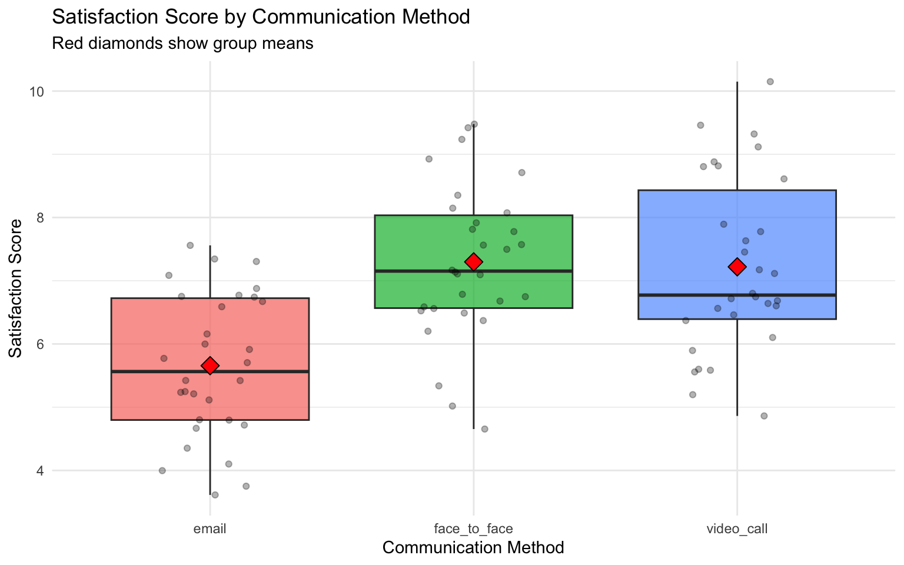
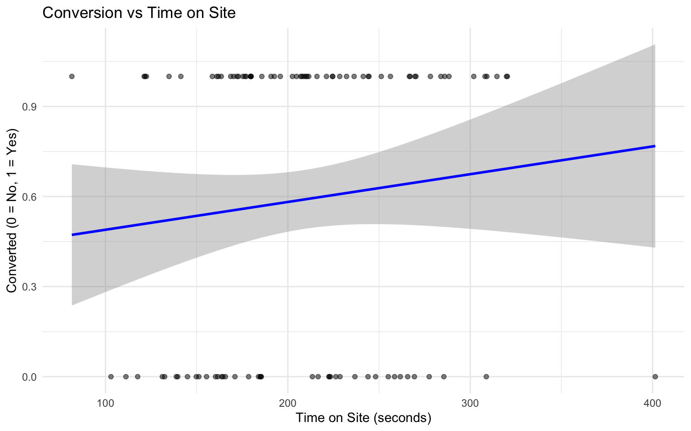

![]()
Code
# Load required packages
library(ggplot2)
library(dplyr)
library(broom)
library(effectsize)
library(car)
library(gridExtra)Complete Solutions
# Load required packages
library(ggplot2)
library(dplyr)
library(broom)
library(effectsize)
library(car)
library(gridExtra)# Load the datasets
marketing_data <- read.csv("marketing_data.csv")
firm_growth_data <- read.csv("firm_growth_data.csv")
leadership_study_between <- read.csv("leadership_study_between.csv")
communication_study <- read.csv("communication_study.csv")
exercise_data <- read.csv("exercise_data.csv")Research Question: How does ad spending affect sales revenue?
# Fit simple regression: sales_revenue ~ ad_spend
model_simple <- lm(sales_revenue ~ ad_spend, data = marketing_data)
summary(model_simple)
Call:
lm(formula = sales_revenue ~ ad_spend, data = marketing_data)
Residuals:
Min 1Q Median 3Q Max
-38.000 -14.155 -1.484 10.909 48.889
Coefficients:
Estimate Std. Error t value Pr(>|t|)
(Intercept) 67.52803 4.06035 16.63 <2e-16 ***
ad_spend 3.03673 0.06417 47.32 <2e-16 ***
---
Signif. codes: 0 '***' 0.001 '**' 0.01 '*' 0.05 '.' 0.1 ' ' 1
Residual standard error: 17.35 on 98 degrees of freedom
Multiple R-squared: 0.9581, Adjusted R-squared: 0.9576
F-statistic: 2239 on 1 and 98 DF, p-value: < 2.2e-16Coefficient interpretation:
For every €1 increase in ad spending, sales revenue increases by approximately €3.04.
This is the total association between ad spending and sales - it captures both the direct effect of advertising and any indirect effects through other variables.
# Add website_traffic to the model
model_multiple <- lm(sales_revenue ~ ad_spend + website_traffic, data = marketing_data)
summary(model_multiple)
Call:
lm(formula = sales_revenue ~ ad_spend + website_traffic, data = marketing_data)
Residuals:
Min 1Q Median 3Q Max
-31.4339 -9.9212 -0.4957 9.7412 31.2228
Coefficients:
Estimate Std. Error t value Pr(>|t|)
(Intercept) 15.7527 7.9513 1.981 0.0504 .
ad_spend 2.1017 0.1407 14.940 < 2e-16 ***
website_traffic 1.1021 0.1540 7.158 1.58e-10 ***
---
Signif. codes: 0 '***' 0.001 '**' 0.01 '*' 0.05 '.' 0.1 ' ' 1
Residual standard error: 14.11 on 97 degrees of freedom
Multiple R-squared: 0.9726, Adjusted R-squared: 0.972
F-statistic: 1719 on 2 and 97 DF, p-value: < 2.2e-16Coefficient interpretation:
Now the coefficients represent ceteris paribus effects (direct effects, controlling for other variables):
# Extract coefficient for ad_spend from both models
coef_simple <- coef(model_simple)["ad_spend"]
coef_multiple <- coef(model_multiple)["ad_spend"]
cat("Simple model coefficient:", round(coef_simple, 3), "\n")Simple model coefficient: 3.037 cat("Multiple model coefficient:", round(coef_multiple, 3), "\n")Multiple model coefficient: 2.102 cat("Difference (bias):", round(coef_simple - coef_multiple, 3), "\n")Difference (bias): 0.935 Understanding Omitted Variable Bias:
The coefficient changed from 3.04 to 2.1 because:
This is called omitted variable bias - when we leave out a relevant variable that correlates with both our predictor and outcome, we get biased estimates.
Business implication: The direct ROI of advertising (€2.1 per €1 spent) is lower than the total association (€3.04 per €1 spent) because some of advertising’s impact works through increased website traffic.
# Extract fitted values and residuals using base R
fitted_values <- fitted(model_multiple)
residuals_values <- residuals(model_multiple)
# Create diagnostic plots
p1 <- ggplot(data.frame(fitted = fitted_values, resid = residuals_values),
aes(x = fitted, y = resid)) +
geom_point(alpha = 0.6) +
geom_hline(yintercept = 0, linetype = "dashed", color = "red") +
geom_smooth(se = FALSE, color = "blue") +
labs(title = "Residuals vs Fitted",
subtitle = "Should show random scatter (no pattern)",
x = "Fitted Values",
y = "Residuals") +
theme_minimal()
p2 <- ggplot(data.frame(resid = residuals_values), aes(sample = resid)) +
stat_qq() +
stat_qq_line(color = "red") +
labs(title = "Normal Q-Q Plot",
subtitle = "Points should follow red line",
x = "Theoretical Quantiles",
y = "Sample Quantiles") +
theme_minimal()
grid.arrange(p1, p2, ncol = 2)`geom_smooth()` using method = 'loess' and formula = 'y ~ x'
What to look for:
Interpretation for our model: Both plots look good - residuals are randomly scattered and approximately normally distributed.
Research Question: How has company revenue grown over time?
# Create scatter plot with linear fit
ggplot(firm_growth_data, aes(x = year, y = revenue)) +
geom_point(size = 3, alpha = 0.8) +
geom_smooth(method = "lm", se = FALSE, color = "red", linewidth = 1) +
geom_smooth(method = "loess", se = FALSE, color = "blue", linewidth = 1) +
labs(title = "Revenue Growth Over Time (Raw Data)",
subtitle = "Red = Linear fit (inadequate), Blue = Flexible fit",
x = "Year",
y = "Revenue (EUR)") +
scale_y_continuous(labels = scales::comma) +
theme_minimal()`geom_smooth()` using formula = 'y ~ x'
`geom_smooth()` using formula = 'y ~ x'
Observation:
The linear fit (red) completely fails to capture the exponential growth pattern. The data curves upward, showing that revenue growth is accelerating over time - a characteristic of exponential growth.
# Create log-transformed variable
firm_growth_data <- firm_growth_data %>%
mutate(log_revenue = log(revenue))
# Fit both models
model_linear <- lm(revenue ~ year, data = firm_growth_data)
model_log <- lm(log_revenue ~ year, data = firm_growth_data)
# Compare R²
cat("Linear model R²:", round(summary(model_linear)$r.squared, 4), "\n")Linear model R²: 0.9188 cat("Log model R²:", round(summary(model_log)$r.squared, 4), "\n")Log model R²: 0.9583 The log model has much better fit!
# Plot log(revenue) vs year
ggplot(firm_growth_data, aes(x = year, y = log_revenue)) +
geom_point(size = 3, alpha = 0.8) +
geom_smooth(method = "lm", se = FALSE, color = "blue", linewidth = 1) +
labs(title = "Log(Revenue) vs Year",
subtitle = "Perfect linear relationship after transformation!",
x = "Year",
y = "Log(Revenue)") +
theme_minimal()`geom_smooth()` using formula = 'y ~ x'
After log transformation, the relationship is linear! This confirms that the original data follows an exponential growth pattern.
# Get coefficient for year in log model
coef_log <- coef(model_log)["year"]
percentage_change <- (exp(coef_log) - 1) * 100
cat("Coefficient in log model:", round(coef_log, 4), "\n")Coefficient in log model: 0.1304 cat("This means:", round(percentage_change, 2), "% growth per year\n")This means: 13.93 % growth per yearKey interpretation rule:
When the dependent variable is log-transformed, coefficients represent percentage changes.
Specifically: Each year is associated with approximately 13.9% growth in revenue.
Why this works: Exponential relationships have the form \(Y = A \cdot e^{Bx}\). Taking the natural log gives: \(\ln(Y) = \ln(A) + Bx\), which is linear!
# Create predictions on original scale
predictions <- firm_growth_data %>%
mutate(
linear_pred = predict(model_linear),
log_pred = exp(predict(model_log)) # Back-transform predictions
)
ggplot(predictions, aes(x = year)) +
geom_point(aes(y = revenue), size = 3, alpha = 0.8) +
geom_line(aes(y = linear_pred), color = "red", linewidth = 1.2) +
geom_line(aes(y = log_pred), color = "blue", linewidth = 1.2) +
labs(title = "Model Predictions Comparison",
subtitle = "Red = Linear model (poor fit), Blue = Log model (excellent fit)",
x = "Year",
y = "Revenue (EUR)") +
scale_y_continuous(labels = scales::comma) +
theme_minimal()
The log model (blue) perfectly captures the exponential growth pattern, while the linear model (red) systematically misses the curvature.
Research Question: Does leadership training improve team performance?
ggplot(leadership_study_between, aes(x = group, y = team_performance, fill = group)) +
geom_boxplot(alpha = 0.7) +
geom_jitter(width = 0.2, alpha = 0.5) +
stat_summary(fun = mean, geom = "point", shape = 23, size = 3, fill = "red") +
labs(title = "Team Performance by Group",
subtitle = "Red diamonds show group means",
x = "Group",
y = "Team Performance Score") +
theme_minimal() +
theme(legend.position = "none")
Visually, the training group appears to have higher performance scores on average.
# Normality test for each group
shapiro_control <- shapiro.test(
filter(leadership_study_between, group == "control")$team_performance
)
shapiro_training <- shapiro.test(
filter(leadership_study_between, group == "training")$team_performance
)
cat("Shapiro-Wilk test - Control group: p =", round(shapiro_control$p.value, 4), "\n")Shapiro-Wilk test - Control group: p = 0.9312 cat("Shapiro-Wilk test - Training group: p =", round(shapiro_training$p.value, 4), "\n")Shapiro-Wilk test - Training group: p = 0.4427 # Equal variances test
levene_result <- leveneTest(team_performance ~ group, data = leadership_study_between)Warning in leveneTest.default(y = y, group = group, ...): group coerced to
factor.cat("\nLevene's test for equal variances: p =", round(levene_result$`Pr(>F)`[1], 4), "\n")
Levene's test for equal variances: p = 0.1078 Interpretation:
Both p-values are > 0.05, so: - ✓ Data is approximately normally distributed in each group - ✓ Variances are approximately equal
We can proceed with the standard t-test.
t_result <- t.test(
team_performance ~ group,
data = leadership_study_between,
var.equal = TRUE
)
print(t_result)
Two Sample t-test
data: team_performance by group
t = -3.7092, df = 58, p-value = 0.0004673
alternative hypothesis: true difference in means between group control and group training is not equal to 0
95 percent confidence interval:
-12.154597 -3.634084
sample estimates:
mean in group control mean in group training
75.92457 83.81891 Results:
cohens_d_result <- cohens_d(team_performance ~ group,
data = leadership_study_between)
print(cohens_d_result)Cohen's d | 95% CI
--------------------------
-0.96 | [-1.49, -0.42]
- Estimated using pooled SD.Effect size interpretation:
What this means: - The groups differ by more than 1 standard deviation - Not only is the difference statistically significant, it’s also practically meaningful - This suggests the training has a substantial real-world impact
Business decision: Given the large effect size and statistical significance, the leadership training appears highly effective and worth implementing if costs are reasonable.
Research Question: Which communication method leads to highest satisfaction?
ggplot(communication_study, aes(x = communication_method,
y = satisfaction_score,
fill = communication_method)) +
geom_boxplot(alpha = 0.7) +
geom_jitter(width = 0.2, alpha = 0.3) +
stat_summary(fun = mean, geom = "point", shape = 23, size = 4, fill = "red") +
labs(title = "Satisfaction Score by Communication Method",
subtitle = "Red diamonds show group means",
x = "Communication Method",
y = "Satisfaction Score") +
theme_minimal() +
theme(legend.position = "none")
The groups appear to have different mean satisfaction scores, with email showing the lowest satisfaction.
# Using aov()
anova_model <- aov(satisfaction_score ~ communication_method,
data = communication_study)
summary(anova_model) Df Sum Sq Mean Sq F value Pr(>F)
communication_method 2 51.46 25.731 16.37 9.21e-07 ***
Residuals 87 136.72 1.571
---
Signif. codes: 0 '***' 0.001 '**' 0.01 '*' 0.05 '.' 0.1 ' ' 1Results:
Conclusion: There is a statistically significant difference in satisfaction scores among the three communication methods (p < 0.001).
Important: ANOVA only tells us that at least one group differs from the others. It doesn’t tell us which groups differ - we need post-hoc tests for that.
# Show that lm() gives same results
lm_model <- lm(satisfaction_score ~ communication_method,
data = communication_study)
anova(lm_model)Analysis of Variance Table
Response: satisfaction_score
Df Sum Sq Mean Sq F value Pr(>F)
communication_method 2 51.462 25.7312 16.374 9.212e-07 ***
Residuals 87 136.716 1.5714
---
Signif. codes: 0 '***' 0.001 '**' 0.01 '*' 0.05 '.' 0.1 ' ' 1The F-statistic and p-value are identical! This demonstrates that ANOVA is just a special case of regression with categorical predictors.
# Look at coefficients
summary(lm_model)$coefficients Estimate Std. Error t value Pr(>|t|)
(Intercept) 5.656295 0.2288701 24.713991 4.231093e-41
communication_methodface_to_face 1.641875 0.3236713 5.072663 2.195718e-06
communication_methodvideo_call 1.563436 0.3236713 4.830320 5.797655e-06Understanding the coefficients:
R automatically creates dummy variables for categorical predictors. Since “email” comes first alphabetically, it becomes the reference group:
eta_sq <- eta_squared(anova_model)For one-way between subjects designs, partial eta squared is equivalent
to eta squared. Returning eta squared.print(eta_sq)# Effect Size for ANOVA
Parameter | Eta2 | 95% CI
------------------------------------------
communication_method | 0.27 | [0.14, 1.00]
- One-sided CIs: upper bound fixed at [1.00].Interpretation:
η² = 0.273 means communication method explains 27.3% of the variance in satisfaction scores.
Effect size guidelines: - Small: η² ≈ 0.01 - Medium: η² ≈ 0.06 - Large: η² ≈ 0.14
Our effect (0.27) is large, indicating communication method has a substantial impact on satisfaction.
# Tukey HSD controls for multiple comparisons
tukey_result <- TukeyHSD(anova_model)
print(tukey_result) Tukey multiple comparisons of means
95% family-wise confidence level
Fit: aov(formula = satisfaction_score ~ communication_method, data = communication_study)
$communication_method
diff lwr upr p adj
face_to_face-email 1.64187523 0.8700877 2.4136627 0.0000065
video_call-email 1.56343582 0.7916483 2.3352233 0.0000172
video_call-face_to_face -0.07843941 -0.8502269 0.6933481 0.9681547Interpretation:
Looking at the p-values (p adj column):
Business conclusion: Both face-to-face and video call communication produce significantly higher satisfaction than email, but there’s no meaningful difference between face-to-face and video call. Consider phasing out email-only communication for important interactions.
exercise_data <- read.csv("exercise_data.csv")
head(exercise_data) user_id design previous_visits time_on_site conversion_prob converted
1 1 Simple 10 179.63774 0.5735567 1
2 2 Simple 10 121.67466 0.4296563 1
3 3 Simple 4 207.78119 0.5690097 1
4 4 Simple 8 81.54658 0.3133435 1
5 5 Simple 8 185.73159 0.5639764 1
6 6 Simple 5 164.35112 0.4734029 0summary(exercise_data) user_id design previous_visits time_on_site
Min. : 1.00 Length:100 Min. : 2.00 Min. : 81.55
1st Qu.: 25.75 Class :character 1st Qu.: 6.00 1st Qu.:165.38
Median : 50.50 Mode :character Median : 8.00 Median :207.41
Mean : 50.50 Mean : 8.15 Mean :208.77
3rd Qu.: 75.25 3rd Qu.:10.00 3rd Qu.:248.89
Max. :100.00 Max. :18.00 Max. :401.45
conversion_prob converted
Min. :0.3133 Min. :0.00
1st Qu.:0.4972 1st Qu.:0.00
Median :0.6035 Median :1.00
Mean :0.6107 Mean :0.59
3rd Qu.:0.7359 3rd Qu.:1.00
Max. :0.9141 Max. :1.00 ggplot(exercise_data, aes(x = time_on_site, y = converted)) +
geom_point(alpha = 0.5) +
geom_smooth(method = "lm", se = TRUE, color = "blue") +
labs(title = "Conversion vs Time on Site",
x = "Time on Site (seconds)",
y = "Converted (0 = No, 1 = Yes)") +
theme_minimal()`geom_smooth()` using formula = 'y ~ x'
There appears to be a positive relationship - users who spend more time on site are more likely to convert.
model_ex_simple <- lm(converted ~ time_on_site, data = exercise_data)
summary(model_ex_simple)
Call:
lm(formula = converted ~ time_on_site, data = exercise_data)
Residuals:
Min 1Q Median 3Q Max
-0.7682 -0.5514 0.3432 0.4173 0.5277
Coefficients:
Estimate Std. Error t value Pr(>|t|)
(Intercept) 0.3969011 0.1836908 2.161 0.0332 *
time_on_site 0.0009249 0.0008475 1.091 0.2778
---
Signif. codes: 0 '***' 0.001 '**' 0.01 '*' 0.05 '.' 0.1 ' ' 1
Residual standard error: 0.4938 on 98 degrees of freedom
Multiple R-squared: 0.01201, Adjusted R-squared: 0.001927
F-statistic: 1.191 on 1 and 98 DF, p-value: 0.2778Interpretation:
The coefficient for time_on_site is 9.2^{-4}.
This means: For every additional second spent on the site, the probability of conversion increases by approximately 9^{-4} (or 0.09%).
Note: This is a linear probability model. For better modeling of binary outcomes, we’d typically use logistic regression, but linear models provide a reasonable approximation for interpretation.
r2_simple <- summary(model_ex_simple)$r.squared
cat("R² =", round(r2_simple, 4), "\n")R² = 0.012 cat("Time on site explains", round(r2_simple * 100, 1), "% of variance in conversion\n")Time on site explains 1.2 % of variance in conversionThe R² is moderate, suggesting time on site is a meaningful predictor but there are other factors influencing conversion.
t_test_design <- t.test(time_on_site ~ design, data = exercise_data)
print(t_test_design)
Welch Two Sample t-test
data: time_on_site by design
t = 7.1438, df = 89.904, p-value = 2.289e-10
alternative hypothesis: true difference in means between group Complex and group Simple is not equal to 0
95 percent confidence interval:
49.23265 87.16487
sample estimates:
mean in group Complex mean in group Simple
242.8722 174.6735 Results:
The complex design keeps users on the site significantly longer (p < 0.001).
cohens_d_design <- cohens_d(time_on_site ~ design, data = exercise_data)
print(cohens_d_design)Cohen's d | 95% CI
------------------------
1.43 | [0.99, 1.87]
- Estimated using pooled SD.Effect size: Cohen’s d = 1.43 (large effect)
Which design keeps users longer?
The Complex design keeps users on the site significantly longer - about 68.2 seconds more on average. This is both statistically significant (p < 0.001) and a large practical effect (d ≈ 1.4).
Business consideration: While complex design increases time on site, we should also check if this translates to higher conversion rates - longer time doesn’t always mean better outcomes!
model_ex_multiple <- lm(converted ~ time_on_site + previous_visits,
data = exercise_data)
summary(model_ex_multiple)
Call:
lm(formula = converted ~ time_on_site + previous_visits, data = exercise_data)
Residuals:
Min 1Q Median 3Q Max
-0.7242 -0.5594 0.2915 0.4246 0.5387
Coefficients:
Estimate Std. Error t value Pr(>|t|)
(Intercept) 0.2666550 0.2150695 1.240 0.218
time_on_site 0.0008095 0.0008518 0.950 0.344
previous_visits 0.0189377 0.0163406 1.159 0.249
Residual standard error: 0.493 on 97 degrees of freedom
Multiple R-squared: 0.0255, Adjusted R-squared: 0.005409
F-statistic: 1.269 on 2 and 97 DF, p-value: 0.2857coef_simple <- coef(model_ex_simple)["time_on_site"]
coef_multiple <- coef(model_ex_multiple)["time_on_site"]
cat("Simple model - time_on_site coefficient:", round(coef_simple, 5), "\n")Simple model - time_on_site coefficient: 0.00092 cat("Multiple model - time_on_site coefficient:", round(coef_multiple, 5), "\n")Multiple model - time_on_site coefficient: 0.00081 cat("Difference:", round(coef_simple - coef_multiple, 5), "\n")Difference: 0.00012 cat("Percentage change:", round((coef_simple - coef_multiple) / coef_simple * 100, 1), "%\n")Percentage change: 12.5 %Is there omitted variable bias? Why or why not?
Yes, there is omitted variable bias!
The coefficient for time_on_site changed from 9.2^{-4} to 8.1^{-4} when we added previous_visits to the model.
Why this happened:
Omitted variable bias occurs when a variable: 1. Affects the outcome (conversion) ✓ 2. Correlates with the included predictor (time_on_site) ✓
Let’s check the correlation:
cor(exercise_data$time_on_site, exercise_data$previous_visits)[1] 0.1169124The correlation is 0.117.
The story: - Users with more previous visits tend to spend more time on site (they’re familiar, engaged customers) - Users with more previous visits are also more likely to convert (trust, familiarity) - The simple model incorrectly attributed some of the “previous visits” effect to “time on site”
Conclusion: The multiple regression model gives us a more accurate estimate of the direct effect of time on site, controlling for user engagement history. This is crucial for making informed design decisions!
fitted() and residuals() to extract valuesIf you have questions about any of these concepts, please come to office hours or post in the course forum!